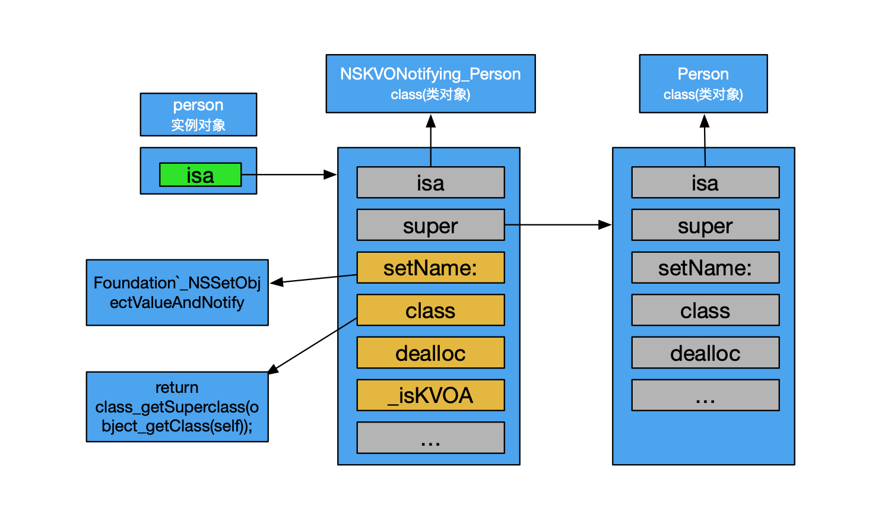
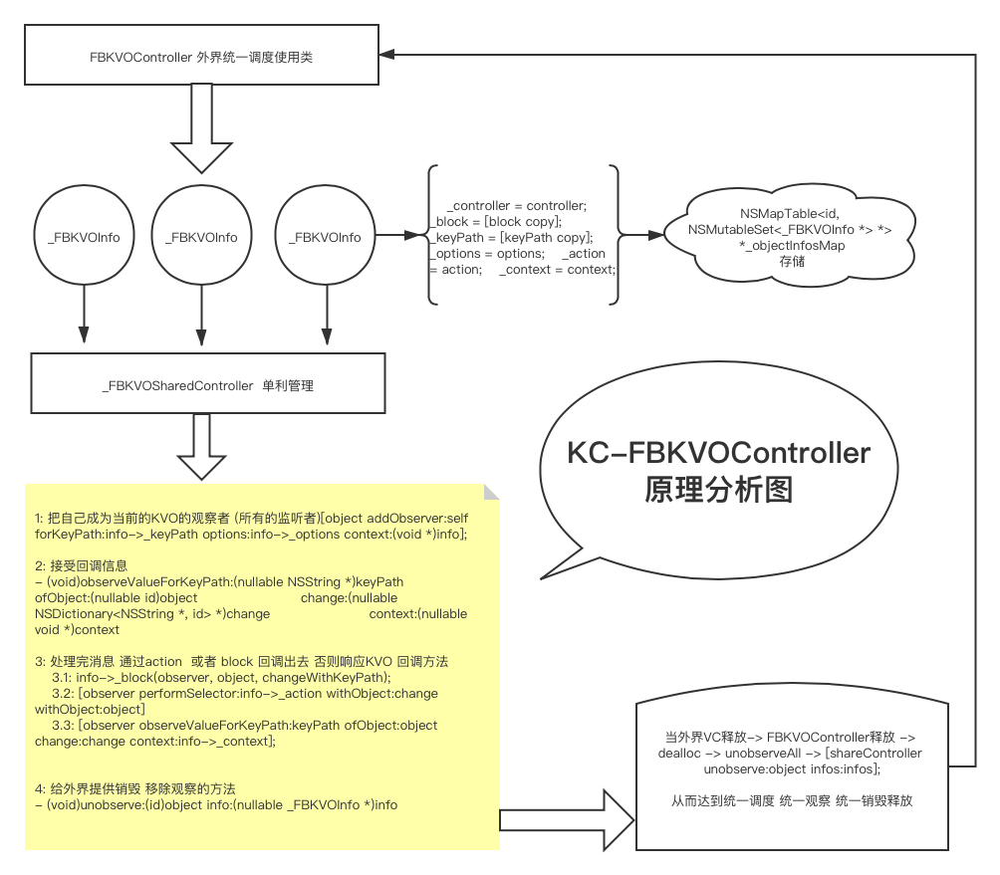

KVO 官方文档：Key-Value Observing
Important: In order to understand key-value observing, you must first understand key-value coding.
在官方的文档中，有这么一句话，要理解KVO，必须先知道KVC。
KVO的基本使用 下面创建一个Person类，并添加几个属性。
1 2 3 4 5 6 7 8 9 10 11 static void *PersonNameContext = &PersonNameContext; @interface Person : NSObject @property (nonatomic, copy) NSString *name; @property (nonatomic, copy) NSString *nickName; @property (nonatomic, copy) NSString *fullName; @property (nonatomic, strong) NSMutableArray *mArray; @end
1. 简单使用 KVO对实例变量是不起作用的。可以试一下，即使添加了set方法、添加了didChangeValueForKey:方法也不行，即使使用了KVC也监听不到。正常使用来说，还是针对属性。
1.1 添加监听 1 - (void)addObserver:(NSObject *)observer forKeyPath:(NSString *)keyPath options:(NSKeyValueObservingOptions)options context:(nullable void *)context;
被监听者进行调用，添加一个监听对象，监听某一个属性的变化。context是上下文，在官方文档中，推荐使用context，不使用这个，也可以使用NULL代替。例如：
1 2 3 4 // 当前对象监听person对象的name属性的变化 [self.person addObserver:self forKeyPath:@"name" options:(NSKeyValueObservingOptionNew) context:NULL]; //[self.person addObserver:self forKeyPath:@"name" options:(NSKeyValueObservingOptionNew) context:PersonNameContext]
1.2 监听变化 1 2 3 4 - (void)observeValueForKeyPath:(NSString *)keyPath ofObject:(id)object change:(NSDictionary<NSKeyValueChangeKey,id> *)change context:(void *)context { //if (context == PersonNameContext) {} NSLog(@"%@",change); }
这里可以通过keyPath来判断某一个属性发生变化，如果监听了多个对象，并且有相同的属性，则在这里会添加一堆判断条件，会使代码变得臃肿，所以还是推荐使用context来判断。
1.3 移除KVO 添加了监听之后，再dealloc时一定要移除。
1 2 - (void)removeObserver:(NSObject *)observer forKeyPath:(NSString *)keyPath context:(nullable void *)context API_AVAILABLE(macos(10.7), ios(5.0), watchos(2.0), tvos(9.0)); - (void)removeObserver:(NSObject *)observer forKeyPath:(NSString *)keyPath;
2. KVO中属性依赖 比如我们要监听fullName属性的变化，当name和nickName中的一个发生变化时，都需要改变fullName的值，需要怎么处理？如果同时监听两个属性也不是不行，但是肯定还有其他更简便的方法。这就需要添加依赖。
在Person.m中实现如下方法：
1 2 3 4 5 6 7 8 9 + (NSSet<NSString *> *)keyPathsForValuesAffectingValueForKey:(NSString *)key { NSSet *keyPaths = [super keyPathsForValuesAffectingValueForKey:key]; if ([key isEqualToString:@"fullName"]) { NSArray *affectingKeys = @[@"name", @"nickName"]; keyPaths = [keyPaths setByAddingObjectsFromArray:affectingKeys]; } return keyPaths; }
这样就可以实现依赖监听了，也不用实现重复代码。
3. KVO监听数组 我们实现对person.mArray的监听，但是当我们执行添加和删除操作时，方法并不会触发监听事件。
这也就时开始的时候所说的，KVO是基于KVC的，这个时候，我们利用KVC的方式获取数组就可以实现了。
1 2 // [self.person.mArray addObject:@"1"]; [[self.person mutableArrayValueForKey:@"mArray"] addObject:@"1"];
4. 自动、手动实现监听 1 2 // 自动开关 + (BOOL)automaticallyNotifiesObserversForKey:(NSString *)key
这是一个系统方法，只需要重写即可，默认是YES，如果针对某些key返回了NO，则需要手动实现set方法。没有实现则不会监听到。
1 2 3 4 5 - (void)setName:(NSString *)name{ [self willChangeValueForKey:@"name"]; _name = name; [self didChangeValueForKey:@"name"]; }
KVO底层原理 我们通过监听一个中的name属性的变化来判断监听前后会出现什么不同，来查看KVO的底层实现原理。
1 2 3 self.person = [Person new]; [self.person addObserver:self forKeyPath:@"name" options:(NSKeyValueObservingOptionNew) context:NULL];
我们在这一行代码添加一个断点，分别通过lldb打印当前person的变化。
1 2 3 4 5 6 7 8 9 10 11 12 13 14 15 16 17 (lldb) po self.person <Person: 0x60000294a010> (lldb) po self.person->isa Person (lldb) po [self.person class] Person (lldb) po [self.person superclass] NSObject (lldb) po self.person <Person: 0x60000294a010> (lldb) po self.person->isa NSKVONotifying_Person (lldb) po [self.person class] Person (lldb) po [self.person superclass] NSObject
我们发现虽然两次po self.person输出的都是Person类，指向的内存地址也是一样的，两次输出class和superClass确都相同。但是isa的指向却是完全不同，竟然变成了NSKVONotifying_Person。
那NSKVONotifying_Person是什么呢？怎么会创建一个这个东西，难道是Person的子类？
为什么两次输出class和superClass都是一样的？
带着疑问，我们输出一下监听前后的方法列表，已经两个class的superClass。
1 2 3 4 5 6 7 8 9 10 11 12 13 14 15 16 17 18 19 20 21 22 23 24 25 26 27 28 -(void)viewDidLoad { // 通过使用字符串的方式获取Class Class cls1 = class_getSuperclass(objc_getClass("Person")); [self printClassAllMethod:objc_getClass("Person")]; NSLog(@"cls1 = %@", cls1); self.person = [[Person alloc] init]; [self.person addObserver:self forKeyPath:@"name" options:(NSKeyValueObservingOptionNew) context:NULL]; [self printClassAllMethod:objc_getClass("NSKVONotifying_Person")]; Class cls2 = class_getSuperclass(objc_getClass("NSKVONotifying_Person")); NSLog(@"cls2 = %@", cls2); } #pragma mark - 遍历方法-ivar-property - (void)printClassAllMethod:(Class)cls { NSLog(@"----%@----", cls); unsigned int count = 0; Method *methodList = class_copyMethodList(cls, &count); for (int i = 0; i<count; i++) { Method method = methodList[i]; SEL sel = method_getName(method); IMP imp = class_getMethodImplementation(cls, sel); NSLog(@"%@-%p",NSStringFromSelector(sel),imp); } free(methodList); }
输出结果：
1 2 3 4 5 6 7 8 9 10 11 12 13 14 // 监听前 KVODemo[74347:5007124] ----Person---- KVODemo[74347:5007124] name-0x105ec6550 KVODemo[74347:5007124] .cxx_destruct-0x105ec6580 KVODemo[74347:5007124] setName:-0x105ec64f0 KVODemo[74347:5007124] cls1 = NSObject // 监听后 KVODemo[74347:5007124] ----NSKVONotifying_Person---- KVODemo[74347:5007124] setName:-0x7fff207bab57 KVODemo[74347:5007124] class-0x7fff207b9662 KVODemo[74347:5007124] dealloc-0x7fff207b940b KVODemo[74347:5007124] _isKVOA-0x7fff207b9403 KVODemo[74347:5007124] cls2 = Person
我们发现:
监听前Person类中有3个方法，super是NSObject
监听后Person类中有4个方法，super是Person
进一步验证了我们之前的猜测，NSKVONotifying_Person是Person的子类，并且重些了setName:, class, dealloc方法，因为地址都已经发生了变化。
打印一下对应的IMP地址，看看所在的调用栈：
1 2 3 4 5 6 7 (lldb) po (IMP)0x105ec64f0 (KVODemo`-[Person setName:] at Person.m:12) (lldb) po (IMP)0x7fff207bab57 (Foundation`_NSSetObjectValueAndNotify) return class_getSuperclass(object_getClass(self));
也说明了，根本不是同一个IMP。当然_NSSetObjectValueAndNotify也不仅仅只有一种，使用~ nm Foundation | grep ValueAndNotify命令可以在iTerm2上查看对应的方法。比如：NSSetBoolValueAndNotify、NSSetIntValueAndNotify等等，根据当前属性的类型来判断的。
也正是因为重写了，setName:才会在外部调用时，person.name也会同时改变。class方法，是为了不暴露NSKVONotifying_Person类，在外界调用时防止混淆。

自定义KVO 根据上面的分析，如果自定义KVO的话，我们需要从下面几个方面入手：
先判断key有没有set方法，有set方法才行。
动态生成子类：
判断是否已经存在子类，没有创建新的子类。
注册类
添加class方法，重新class方法
添加setter方法，重新set方法，这里需要处理消息，发送给父类，通知修改值。
修改isa指向
保存信息，方便回调。
remove时，重新设置isa指向父类。
代码就不贴了，哪都有~
通过GNU解析 gnu源码
gnu源码可以清晰的看到整体的流程，只是读起来可能会稍微费力一点，查看代码中的重要逻辑其实就可以了。
FBKVOController 稍微说一下这个，内部实现还是很值得学习的。
我们直接看源码实现：
首先创建一个FBKVOController类型的实例变量。
1 2 3 4 5 6 7 8 9 10 11 - (instancetype)initWithObserver:(nullable id)observer retainObserved:(BOOL)retainObserved { self = [super init]; if (nil != self) { _observer = observer; NSPointerFunctionsOptions keyOptions = retainObserved ? NSPointerFunctionsStrongMemory|NSPointerFunctionsObjectPointerPersonality : NSPointerFunctionsWeakMemory|NSPointerFunctionsObjectPointerPersonality; _objectInfosMap = [[NSMapTable alloc] initWithKeyOptions:keyOptions valueOptions:NSPointerFunctionsStrongMemory|NSPointerFunctionsObjectPersonality capacity:0]; pthread_mutex_init(&_lock, NULL); } return self; }
这里会生成一个NSMapTable类型的数据，里面存放的是<id, NSMutableSet<_FBKVOInfo *> *>这种格式的数据。
然后走到添加监听的方法，这里也没啥好说的，就是创建了一个_FBKVOInfo，存放系统KVO需要的所有东西，重点再下一句代码。
1 2 3 4 5 6 7 8 9 10 11 12 13 - (void)observe:(nullable id)object keyPath:(NSString *)keyPath options:(NSKeyValueObservingOptions)options block:(FBKVONotificationBlock)block { NSAssert(0 != keyPath.length && NULL != block, @"missing required parameters observe:%@ keyPath:%@ block:%p", object, keyPath, block); if (nil == object || 0 == keyPath.length || NULL == block) { return; } // create info _FBKVOInfo *info = [[_FBKVOInfo alloc] initWithController:self keyPath:keyPath options:options block:block]; // observe object with info [self _observe:object info:info]; }
好了，重点来了。会从map表中查找对应的object是否有对应的数据。然后与新创建的info进行比较，没有则添加到map表中。
_FBKVOSharedController是一个单利，所有的观察者都通过它来进行监听，内部使用的系统的KVO。
1 2 3 4 5 6 7 8 9 10 11 12 13 14 15 16 17 18 19 20 21 22 23 24 25 26 27 28 29 30 31 - (void)_observe:(id)object info:(_FBKVOInfo *)info { // lock pthread_mutex_lock(&_lock); NSMutableSet *infos = [_objectInfosMap objectForKey:object]; // check for info existence _FBKVOInfo *existingInfo = [infos member:info]; if (nil != existingInfo) { // observation info already exists; do not observe it again // unlock and return pthread_mutex_unlock(&_lock); return; } // lazilly create set of infos if (nil == infos) { infos = [NSMutableSet set]; [_objectInfosMap setObject:infos forKey:object]; } // add info and oberve [infos addObject:info]; // unlock prior to callout pthread_mutex_unlock(&_lock); [[_FBKVOSharedController sharedController] observe:object info:info]; }
在系统方法接收到改变时，会通过block、方法或者系统方法来返回数据。
1 2 3 4 - (void)observeValueForKeyPath:(nullable NSString *)keyPath ofObject:(nullable id)object change:(nullable NSDictionary<NSString *, id> *)change context:(nullable void *)context
最后就是移除。需要注意的是，添加的时候是新创建了一个info，移除的时候，为啥也是新创建了一个info？
1 2 3 4 5 6 7 8 - (void)unobserve:(nullable id)object keyPath:(NSString *)keyPath { // create representative info _FBKVOInfo *info = [[_FBKVOInfo alloc] initWithController:self keyPath:keyPath]; // unobserve object property [self _unobserve:object info:info]; }
_unobserve:info:的内部实现与添加的时候有点类似，都是通过map去找对应的_FBKVOInfo。那新创建一个info能起到移除的效果吗？答案是肯定的。
1 2 3 4 5 6 7 8 9 10 11 12 13 14 15 16 17 18 19 20 21 22 23 24 25 26 - (void)_unobserve:(id)object info:(_FBKVOInfo *)info { // lock pthread_mutex_lock(&_lock); // get observation infos NSMutableSet *infos = [_objectInfosMap objectForKey:object]; // lookup registered info instance _FBKVOInfo *registeredInfo = [infos member:info]; if (nil != registeredInfo) { [infos removeObject:registeredInfo]; // remove no longer used infos if (0 == infos.count) { [_objectInfosMap removeObjectForKey:object]; } } // unlock pthread_mutex_unlock(&_lock); // unobserve [[_FBKVOSharedController sharedController] unobserve:object info:registeredInfo]; }
因为创建的临时变量info，是通过NSMutableSet获取member来获取的，是怎么获取到的。
Each element of the set is checked for equality with object until a match is found or the end of the set is reached. Objects are considered equal if isEqual: returns YES.
member:方法是通过isEqual:来判断是否是对应的值。
1 2 3 4 5 6 7 8 9 10 11 12 13 14 15 16 17 18 19 //_FBKVOInfo - (NSUInteger)hash { return [_keyPath hash]; } - (BOOL)isEqual:(id)object { if (nil == object) { return NO; } if (self == object) { return YES; } if (![object isKindOfClass:[self class]]) { return NO; } return [_keyPath isEqualToString:((_FBKVOInfo *)object)->_keyPath]; }
重写了hash方法和isEqual:方法，这样就可以直接通过member获取了。这源码的设计思路简直爽的一批~~~网上找到FBKVO流程图：

总结：
KVO的变量依赖
KVO的原理：
动态生成子类NSKVONotifying_A
注册类
动态添加class方法，返回父类
动态添加set方法，消息回传给父类，通知修改值
修改isa指向子类
移除KVO，修改isa执行父类
GNU源码
FBKVOController源码设计思路。